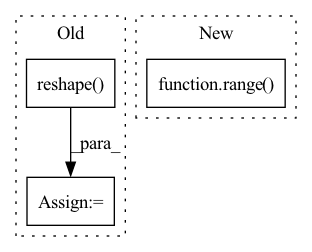

Pattern ID :2003
Before Change
self.assign_adain_params(class_adain_params)
x = self.fc_layers(content_code)
x = x.reshape( -1, self.__adain_dim, self.__initial_height, self.__initial_width)
x = self.adain_conv_layers(x)
x = self.last_conv_layers(x)
return xAfter Change
for layer in self.unshared:
out += [layer(h)]
out = torch.stack(out, dim=1) // (batch, num_domains, style_dim)
idx = torch.LongTensor(range( y.size(0)) ).to(y.device)
s = out[idx, y] // (batch, style_dim)
return s
In pattern: SUPERPATTERN
Frequency: 4
Non-data size: 3
Instances Fragment ID: 13680560
Project Name: avivga/overlord
Commit Name: fa020664bf0dcbd11e72953117146be2cdbc3b48
Time: 2020-05-29
Author: avivga@gmail.com
File Name: model/modules.py
M Class Name: Decoder
N Class Name: MappingNetwork
M Method Name: forward(3)
N Method Name: forward(3)
M Parent Class: nn.Module
N Parent Class: nn.Module
M File Name: model/modules.py
N File Name: model/modules.py
M Start Line: 153
M End Line: 160
N Start Line: 141
N End Line: 148
Before Change
x = F.relu(fc(x))
x = self.dropout(x)
x = self.fc[-1](x) // (B*N, 1)
x = torch.reshape( x, (B, N)) // (B, N)
return x
After Change
if self.context > 1:
z = [x]
for d in range( 1, self.context // 2 + 1) :
z_u = torch.zeros_like(x)
z_u[:, d:, :] = x[:, :-d, :] // i-d
z.append(z_u) Fragment ID: 13680564
Project Name: mxfold/mxfold2
Commit Name: c37c09d1ad2940a13dd4c82253c8607c8175115a
Time: 2019-11-06
Author: satoken@bio.keio.ac.jp
File Name: dnnfold/fold/layers.py
M Class Name: FCUnpairedLayer
N Class Name: FCUnpairedLayer
M Method Name: forward(2)
N Method Name: forward(2)
M Parent Class: nn.Module
N Parent Class: nn.Module
M File Name: dnnfold/fold/layers.py
N File Name: dnnfold/fold/layers.py
M Start Line: 117
M End Line: 123
N Start Line: 121
N End Line: 137
Before Change
output = self.linear2(output)
// [batch * chunk, length // chunk, d_model]
output = output.reshape( -1, output.size(1) * self.chunk, output.size(2))
// [batch, length, d_model]
return output
After Change
if self.training:
output = [
deterministic_dropout(chunk, seed + i, dropout=self.dropout)\
for chunk, i in zip(output, range( self.chunk) )
]
// [batch, length // chunk, d_ff]
Fragment ID: 13680559
Project Name: rick-mccoy/reformer-pytorch
Commit Name: 2329ebf0b795c0c005a71d3573236e9a6475bc98
Time: 2020-02-02
Author: rickmccoy3141@gmail.com
File Name: model/feedforward.py
M Class Name: ChunkFeedForward
N Class Name: ChunkFeedForward
M Method Name: forward(3)
N Method Name: forward(3)
M Parent Class: nn.Module
N Parent Class: nn.Module
M File Name: model/feedforward.py
N File Name: model/feedforward.py
M Start Line: 16
M End Line: 26
N Start Line: 17
N End Line: 28